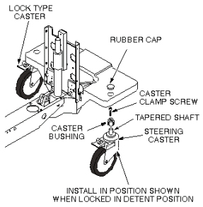

Operating Documentation
Direction 5133315-3, Rev# 14
Signa EXCITE HD 1.5T Service Methods
Module Version 2.0, Version Date 11/6/08
Operating Documentation |
| Required Persons | Preliminary Reqs | Procedure | Finalization |
|---|---|---|---|
| 1 | Not Applicable | 1 hour | Not Applicable |
There are two types of casters on the patient transport: a straight-line tracking (steering) caster that is mounted on the right front side of the patient transport, or three lock type casters (see Illustration L2670A).
| Item | Qty | Effectivity | Part# | Manufacturer | |
|---|---|---|---|---|---|
| Synthetic Lubricating Grease | 1 | - | 46-256047P1 | - | |
| Block of wood to support table when casters are being replaced | 1 | - | - | - | |
Unlock patient transport, and move from exam room.
Prepare block of wood to support table when casters are replaced.
Remove rubber cap from the caster to be replaced (see Illustration 1).
Illustration 1: CASTER WHEEL ASSEMBLY

Remove caster clamp screw (center screw) from the caster to be replaced.
Repeat steps Step 3 and Step 4 on any one of the other casters, because two caster clamp screws are required to force the tapered caster shaft out of the caster bushing on the defective caster.
Return to the caster to be replaced. Thread the two caster clamp screws in the vacant caster release screw holes of the caster bushing. Force the tapered caster shaft out of the caster bushing by tightening two caster clamp screws, equally, a little at a time, until caster taper fit breaks loose and caster falls off.
Be sure that bushing is not bell-mouthed at bottom. If bushing is damaged, remove by turning out of the bottom of the casting using a 3/4-inch (19 mm) socket.
| NOTE: | If new bushing is required, apply synthetic lubricating grease to inside taper and threads of bushing before installation. |
Using synthetic lubricating grease, lubricate tapered stem of caster and threads of caster clamp screw.
Install new caster into bushing. Straight line tracking (steering) caster should be installed so that it is oriented in position shown when locked in detent position (see Illustration 2).
Illustration 2: CASTER WHEEL ASSEMBLY
Install caster clamp screw and tighten.
Remove support wood blocks.
Perform procedure for Checking Caster Height Adjustment in Leveling Patient Transport Procedure.
| NOTE: | Equipment damage possibility. Caster adjustments must be done according to Leveling Patient Transport Procedure. Mis-adjustments leave caster bushing vulnerable to damage, which can result in injury to patient and/or persons near patient transport. |
No finalization steps.